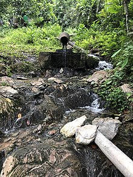
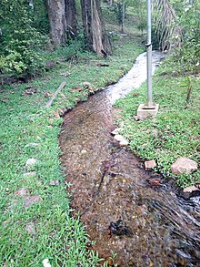
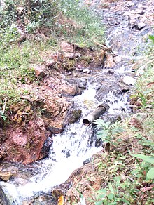
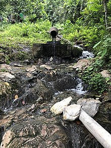
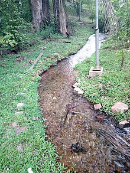
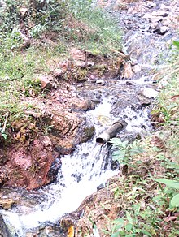

The Ikogosi Warm Springs is a tourist attraction located at Ikogosi, a town in Ekiti State, southwestern Nigeria. Flowing abreast the warm spring is another cold spring which meets the warm spring at a confluence, each maintaining its thermal properties.These attributes make the spring a tourist attraction in Nigeria. Research suggested that the warm spring has a temperature of about 70oC at the source and 37oC at the confluence.
 




